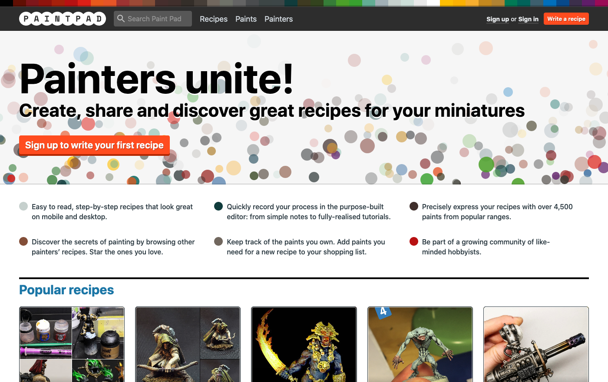

Here's a list of Side Project Summer projects
Add your contribution to this showcase by opening a pull request!
Follow the instructions
on cloning a website on GitHub to take a local copy of this website's code. Edit the
showcase.html file, copying and pasting one of the examples already there to add your own project.
Feel free to add screenshots to the images folder and reference them using the
<img> HTML tag. Then open a
pull request on GitHub, and the General Products maintainers will review it, suggest any changes, and ultimately
merge it in. Here is a pull request
you can look at as an example. Ping the hashtag if you need a hand!
Make Our Book
Emma Barnes @has_many_books
"I have written makeourbook.com to bring publishing to the classroom. I'm
particularly pleased with the use of the table of contents for navigation: it is a chance to improve my JavaScript
which is not my strength. I am using React Beautiful DND.
This summer I'm working on the Purchase workflow so orders are more automated, and on more layout options for
schools."

University of London Press
Jamie Bowman @jreecebowman
"For Side Project Summer 2019, I tried to get to grips with making API calls in Ruby.
I built a site that interacts with the Consonance Product API
to fetch metadata for books published by the University of London Press,
where I work. I learned plenty of useful stuff about APIs along the way, a lot of which has now become relevant to
my role at the Press. Read more about how it works here.
Currently in the process of scoping out my project for Side Project Summer 2020!"

Paint Pad
Andy Pearson @andypearson
"Paint Pad is a website for creating, sharing and discovering recipes for painting miniatures (tiny plastic models that you play tabletop games with). It is built using Ruby on Rails and React. Last year for the inaugural Side Project Summer I prepped the site for launch, and then worked on various fixes and improvements, including some randomly generated circles. You can see all the details on Twitter. This year, I want to improve the site by adding new tools and features to make it an even more useful resource for beginners and experts alike." 
Learn Ionic React
John Pettigrew @john_pettigrew
"Last year, I started to learn Ruby on Rails just before Side Project Summer
started, and used it to build the first version of Umbrella Analytics -
something that's turned (thanks to a year of part-time work) into a service that real people use and like! This year,
though, I'm going to learn some more JavaScript - specifically, the Ionic framework. This is so I can work alongside
my 18-year-old son, who wants to build an app for recording archery scores (a hobby we share). I already know some JS
but Ionic and React are completely new to me, and a little scary!